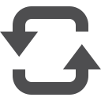

B Harfi ile Başlayan Almanca Kelimeler
baby
????
bebek
B 1/209

B harfi için çözdüğünüz toplam kelime sayısı:
- (das) baby / bebek
- (das) bad / banyo
- (das) becher / bardak, tas, kupa
- (das) bedenken / düşünce, kuşku, şüphe
- (das) beileid / baş sağlığı, taziye
- (das) bein / bacak, ayak
- (das) beispiel / örnek
- (das) bekenntnis / kabul, itiraf
- (das) benehmen / davranış
- (das) benzin / benzin
- (das) bett / yatak
- (das) bewusstsein / bilinç, şuur
- (das) bier / bira
- (das) bild / resim
- (das) blatt / yaprak, kağıt, gazete
- (das) blut / kan
- (das) boot / sandal, kayık
- (das) brot / ekmek
- (das) brötchen / küçük ekmek
- (das) buch / kitap
- (das) büro / büro
- (der) bahnhof / istasyon
- (der) ball / top, balo
- (der) bankrott / iflas
- (der) bart / sakal
- (der) basketball / basketbol
- (der) bau / yapı, inşaat
- (der) bauch / karın
- (der) bauer / çiftçi, köylü
- (der) baum / ağaç
- (der) beamter / memur
- (der) bedarf / ihtiyaç, gereksinim
- (der) befehl / emir
- (der) begriff / kavram, fikir
- (der) behörde / resmi daire
- (der) beifall / alkış
- (der) beitrag / katılma, aidat
- (der) benutzername / kullanıcı adı
- (der) bereich / bölge, alan, dal, bölüm
- (der) berg / dağ
- (der) bericht / rapor, açıklama
- (der) beruf / meslek, iş
- (der) beschluss / karar
- (der) besitz / mal, servet
- (der) besitzer / sahip
- (der) bestand / varlık, mevcut, stok
- (der) besuch / ziyaret
- (der) besucher / ziyaretçi, konuk
- (der) betrag / tutar, değer, miktar
- (der) betrieb / işletme, firma
- (der) betrüger / dolandırıcı, üçkağıtçı
- (der) bettler / dilenci
- (der) beutel / torba, kese
- (der) bewegung / hareket, devinim
- (der) beweis / kanıt, delil
- (der) bewohner / oturan, sakin
- (der) beziehung / ilişki, bağlantı
- (der) bezirk / bölge, semt, mahalle
- (der) bezug / kılıf
- (der) bildschirm / monitör
- (der) bleistift / kurşunkalem
- (der) blick / bakış
- (der) brennstoff / yakıt, akaryakıt
- (der) brief / mektup
- (der) briefkasten / posta kutusu
- (der) bruder / erkek kardeş
- (der) bräutigam / güvey, nişanlı erkek
- (der) buchstabe / harf
- (der) bus / otobüs
- (der) bürgermeister / belediye başkanı
- (die) bahn / tren, demir yolu
- (die) banane / muz
- (die) bank / bank, sıra, banka
- (die) batterie / pil, batarya
- (die) baumwolle / pamuk
- (die) baustelle / şantiye, inşaat
- (die) bedeutung / anlam, önem
- (die) bedienung / servis, işletme, kullanım
- (die) bedingung / koşul, şart
- (die) begeisterung / şevk, istek, coşku
- (die) bekanntschaft / tanışıklık
- (die) bekleidung / giyim
- (die) belastung / yük, ağırlık, yük olma
- (die) bemühung / gayret, çaba
- (die) beratung / danışma, danışmanlık
- (die) bescheinigung / belge, makbuz
- (die) beschäftigung / uğraş, iş
- (die) besprechung / konuşma, görüşme
- (die) bestimmung / tüzük, yönetmelik
- (die) bevölkerung / nüfus, ahali
- (die) bewerbung / istek, başvuru
- (die) bibel / incil
- (die) bibliothek / kütüphane
- (die) bilanz / bilanço
- (die) bildung / oluşum, bilgi, kültür
- (die) bitte / rica, istek
- (die) blume / çiçek
- (die) bluse / bluz
- (die) botschaft / haber, mesaj, büyükelçilik
- (die) branche / branş, şube, dal
- (die) braut / gelin, nişanlo kız
- (die) breite / genişlik, en, enlem
- (die) bremse / fren
- (die) briefmarke / pul
- (die) brieftasche / cüzdan
- (die) brille / gözlük
- (die) bronze / bronz, tunç
- (die) brust / göğüs, bağır, meme
- (die) buchhandlung / kitabevi
- (die) burg / kale, hisar
- (die) butter / tereyağı
- (die) bäckerei / fırın
- (die) börse / borsa
- (die) bücherei / kütüphane
- (die) bühne / sahne
- (die) bürste / fırça
- backen / pişirmek
- bald / yakinda
- bar / nakit, peşin
- basieren / dayanmak, baz almak
- bauen / inşa etmek, kurmak
- beabsichtigen / amaçlamak, niyetinde olmak
- bearbeiten / işlemek, üzerinde çalışmak
- bedeuten / anlamına gelmek, demek
- bedrohen / tehdit etmek
- beerdigen / gömmek, defnetmek
- befriedigen / memnun etmek
- befriedigend / memnuniyet verici
- begabt / yetenekli
- begegnen / karşılaşmak, rastlamak
- beginnen / başlamak
- beglaubigen / onaylamak, tasdik etmek
- begleiten / eşlik etmek
- begründen / gerekçe göstermek
- bekannte / tanıdık
- begrüßen / selamlamak
- behalten / korumak, saklamak, akılda tutmak
- behaupten / ileri sürmek, söylemek
- beherrschen / hakim olmak, hükmetmek
- bei / yakınında, sırasında, iken
- beide / her ikisi, ikisi birden
- beinah / az kalsın, neredeyse, hemen hemen
- beißen / ısırmak
- bekannt / tanınmış, ünlü, bilinen
- bekanntmachen / bildirmek, duyurmak
- bekommen / almak
- beleidigen / hakaret etmek
- beliebt / sevilen, tutulan
- benachrichtigen / haber vermek
- benutzen / kullanmak
- beobachten / gözlemek, gözetlemek
- bequem / rahat, konforlu
- beraten / danışmak, görüşmek
- bereit / hazır
- bereits / önceden, şimdiden, bile
- berichten / rapor vermek, bildirmek
- beruflich / mesleki, meslek ile ilgili
- beruhigen / yatıştırmak, susturmak
- berücksichtigen / göz önünde bulundurmak
- berühmt / tanınmış, ünlü
- beschreiben / betimlemek, tarif etmek
- beseitigen / atlatmak, bertaraf etmek
- besetzt / dolu, meşgul
- besitzen / sahip olmak
- besondere / özel, ayrı
- besonders / özellikle, özel olarak
- besorgt / kaygılı, endişeli
- besser / daha iyi
- beste / en iyi
- bestehen / var olmak, geçmek, başarmak
- bestellen / sipariş vermek, yer ayırtmak
- bestimmen / belirlemek, kararlaştırmak
- bestimmt / belirli, kesinlikle, mutlaka
- beständig / sürekli, devamlı, istikrarli
- bestätigen / doğrulamak, onaylamak
- besuchen / ziyaret etmek, okula gitmek
- beteiligen / katılmak
- betrunken / içkili, sarhoş
- bevor / den dan önce
- bevorzugen / seçmek, tercih etmek
- bewerten / değer biçmek, değerlendirmek
- bewusst / kasti, mahsus, bilinçli
- bewölkt / bulutlu
- bezahlen / ödemek
- beziehungsweise / yani, daha doğrusu
- bezüglich / hakkında, ilişkin
- bilden / oluşturmak, biçim vermek, kurmak
- billig / ucuz
- bisher / şimdiye kadar, şimdiye dek
- bitte / lütfen, buyrun
- blass / solgun, soluk
- blau / mavi
- bleiben / kalmak, durmak
- blitzen / parlamak, resim çekmek, şimşek çakmak
- blond / sarışın
- bloß / çıplak, açık, yalnız, sadece
- blöd / budala, enayi, gerzek
- braten / kızartmak
- brauchen / ihtiyaci olmak
- braun / kahvrengi, güneşten yanmış, kararmış
- brav / terbiyeli, uslu
- breit / geniş
- bremsen / fren yapmak
- bringen / getirmek
- brutto / brüt
- buchstabieren / harf harf söylemek, kodlamak
- bummeln / gezinmek, boş gezmek
- bunt / renkli
- böse / fena, kötü
C harfi için tıklayın